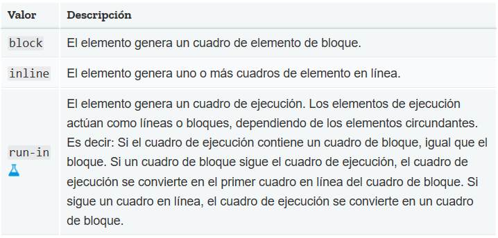
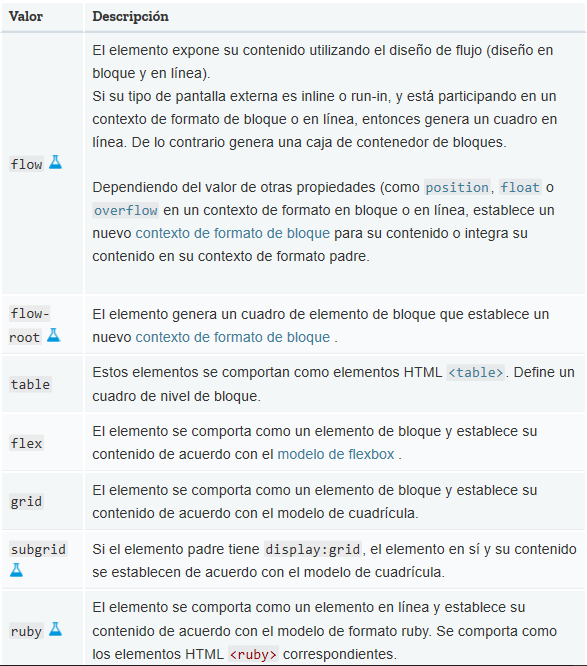
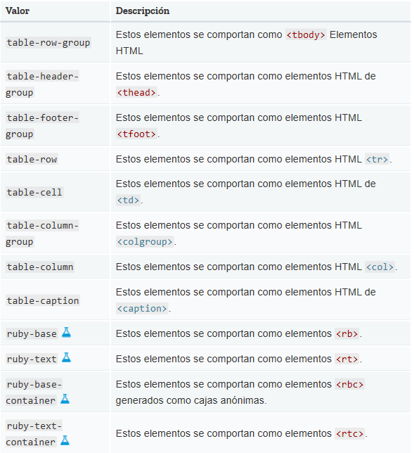
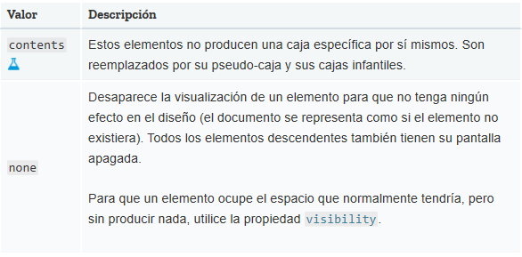
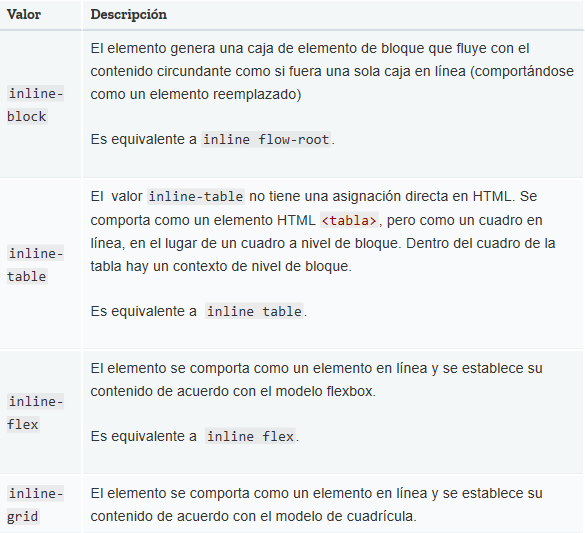

La propiedad CSS display especifica si un elemento es tratado como block or inline element y el diseño usado por sus hijos, como flow layout(Diseño de Flujo), grid(Cuadricula) o flex(Flexible).
Formalmente la propiedad display establece los tipos de visualización interna y externa de un elemento. La tipo externa establece la participacion de un elemento en flow layout; la tipo interna establece el layout(Diseño) de los hijos. Algunos valores de display estan totalmente definidos con sus especificaciones propias; por ejemplo el detalle de que pasa cuando display: flex es declarado y definido en la especificacion de Modelo Flexible de Caja(Flexible Box Model specification) de CSS. Vea la siguientes tablas para mas especificaciones individuales.
Además de los Diferentes Tipos de caja de Visualizacion, el valor de none permite Desactivar la Visualizacion DE UN Elemento; cuando no se utiliza none, todos los elementos descendentes también quedan desactivados. El documento se procesa como si el elemento no existiera en el árbol de documentos.
La propiedad display se especifica mediante valores de palabras clave. Los valores de palabras clave se agrupan en seis categorías:
En la actualidad, es mejor especificar display utilizando una sola palabra clave; aunque las últimas especificaciones permiten combinar algunas palabras clave, esto aún no está bien soportado por los navegadores.
Estas palabras clave especifican el tipo de pantalla externa del elemento, que es esencialmente su función en el diseño de flujo: A continuación se definen:
Estas palabras clave especifican el tipo de pantalla interna del elemento, que define el tipo de contexto de formato que establece su contenido (suponiendo que es un elemento no reemplazado). Se definen como sigue:
El elemento genera un cuadro de bloque para el contenido y un cuadro en línea de elemento de lista independiente.
Si no se especifica ningún valor display-inside, el tipo de pantalla interna de la caja principal es el predeterminado flow. Si no se especifica ningún valor display-outside, el tipo de pantalla externa de la caja principal tiene el valor predeterminado block.
Algunos modelos de disposición, como table y ruby, tienen una estructura interna completa, con varios papeles diferentes que sus hijos y descendientes pueden llenar. Esta sección define los valores de visualización "internos", que sólo tienen significado dentro de ese modo de disposición particular.
A menos que se especifique lo contrario, el tipo de visualización interno y el tipo de visualización exterior de los elementos que utilizan estos valores de visualización se establecen en la palabra clave dada.
Estos valores se definen si un elemento genera cuadros de visualización en absoluto.
CSS 2 usó una sintaxis de palabra clave única para la propiedad display, requiriendo palabras clave separadas para variantes de nivel de bloque e inline del mismo modo de disposición. Se definen como sigue:
